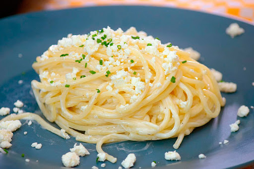

Spaguetti

Description
This is a simple spaghetti recipe, with cheap materials and easy to do
Ingredients
- two tablespoon of butter
- one envelope of spaghetti
- 1/3 of onion
Steps
- Preheat oven to 350 degrees F (175 degrees C). Place the squash halves into a large baking dish with the cut-sides facing down.
- Bake in the preheated oven until easily pierced with a knife, about 40 minutes. Cool squash for 10 minutes.
- Shred the inside of the squash with a fork and transfer to a bowl. Add olive oil, salt, and pepper to shredded squash and toss to coat. Serve with Parmesan cheese.